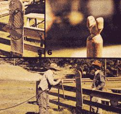

We still don't know how to tell Don A. McKay (see Mother Earth News, No. 41, Page 7) to use up the excess baling wire he's been accumulating on his Washington State ranch. But Travis Brock, who recently joined the Mother Earth News research and editorial staff, certainly knows what to do with the mountains of baler twine that constantly pile up on farms and ranches from sea to shining sea.
"Turn that string into rope," says Travis. "It's easy to do-darn near automatic, in fact-once you've spent about an hour putting together the very simple, yet extremely effective, rope-making machine I saw working on a ranch near The Dalles, Oregon."
The secret of the Incredible Rope-Making Machine is nothing but a few hooks (we like three, but you can use as many or as few as you like) that can be turned at the same time, at the same speed and all in the same direction. This isn't nearly as difficult to accomplish as it might sound.
Scrounge up some 1/8-inch steel rod and cut off three pieces, each eight inches long. (NOTE: The specifications given in this article are for the three-hook machine shown in the accompanying black and white photos. You can change them-within reason-to match whatever materials you have on hand, however, without affecting the output of your rope-maker one bit.)
Form the rods into three identical "Z's" that look like old-timey automobile cranks (see sketch). The dimensions shown in the image gallery are somewhat arbitrary. It really doesn't matter a great deal whether the central "throw" of the three cranks is 1-3/4" or 2-1/4". Nor does it matter if you eventually set those cranks into your machine's boards in the triangle pattern we used, in a straight line or in some completely random pattern.
For smoothest operation of the finished machine, however, it is quite important that the two main bends in each crank be precisely 90° each and that all three "throws" - whatever they measure - be exactly the same length. It's also important that the three holes in the board "handle"-NO MATTER WHAT THEIR PATTERN-line up exactly with the three holes in the board used for the main body of the rope-maker(try clamping the slabs of wood together and drilling each set of matching holes through both thicknesses at the same time).
We made our rope-maker's body and handle from scrap 1" x 10" pine that happened to be lying around the research shop, but the shape and size of the components - even the material from which they're fabricated - are really not important. You can even drill a set of holes right through a firmly anchored post in one of your fences and, as long as the holes in whatever you use for a handle match the holes in the post, come out with as good a rope-maker as anybody's!
Thread the long ends of the "Z" rods through the holes in your machine's main board and then bend the tails that stick out so they'll [1] keep the rods from slipping out and [2] hold the loops of twine that you'll eventually slip over them.
Then add any kind of grip you find comfortable to the ropemaker's handle board, poke the short ends of the "Z's" through the board's holes, drill small "keeper" holes in the rod tips that protrude and secure those tips in place with flat washers and cotter keys.
Behold! By grasping the grip of your "handle" and cranking the board around in a circle, you can now turn all the hooks at the same time, at the same speed and in the same direction. Your Incredible Rope-Making Machine is complete!
Grab a knife and whittle out the little (about a foot and a half long) Y-shaped stick or narrow board you'll use to separate the strands of your forming rope (until you want them to twist together), and you'll be ready to go into production. (A Y-shaped separator, obviously, matches the three-hooked ropemaker described here. If you construct a four-hooked machine, however, your separator would have to be X-shaped, etc.)
One very abundant "free" source of rope-making material, as we've mentioned, is baling twine, either traditional hemp or the newfangled plastic variety. If you don't have a mountain of the stuff to dig into, it's a sure bet that a dairyman, rancher or farmer in your immediate vicinity does. It's also a guaranteed wager that he'll be tickled pink to give you all the used bale strings you want. Just ask.
The only drawback to making rope from this discarded twine is the fact that it comes in relatively short pieces (five to eight feet long) that must somehow be joined together if you expect to twist 'em into a rope of any length.
This joining can be done in either of two ways: [1] You can simply tie the pieces of twine together with square knots. The resulting rope will be a little lumpy, but its looks won't hurt its strength any and it'll still be pretty enough to tie a load of hay on a wagon with or fashion into a halter the next time you want to lead Old Bossy around the barnyard. Or [2] you can take the time to splice the short lengths of twine together. (Cut the ends of two pieces off clean with a knife, unravel both of 'em back about three inches, lay 'em down on a flat surface so that the ends overlap somewhat more than the length of the frazzles and the fibers of both strands spiral in the same direction, and then-with a pencil or sharp stick-lace and weave the two twines together.) Once the cords are twisted together tightly with others to make a rope, the splice will hold as well as any knot.
Of course, if you want absolutely perfect rope at a giveaway price, you can always ask the folks down at the farm supply store if they have any balls of twine that have come partially unrolled and are no longer fit for use in a baler. Such string usually sells for practically nothing.
Or-what the heck-just go first class and buy brand new baling twine in good 18,000-foot rolls at its full price. It's worth it. Without worrying about a single knot or splice, you'll be able to crank off top-quality, half-inch rope (the kind that sells "ready-made") for less than one thin cent a foot.
New or old, knotted or one long strand, once you have your raw materials in hand, the rest is easy. Tie or bolt your rope-maker to something as shown below. Then loop the twine back and forth between the hooks on your machine's main board and the ears of the "Y" stick as shown in Photo 2. And remember that your rope will "shrink" about one-fourth in length as you crank it together. If you want a finished line that's 100 feet long, then, you should start off with 750 feet of twine looped into six strands that run back and forth between a rope-making machine and a "Y" stick that are positioned 125 feet apart.
OK? Grab your husband, wife, one of the children, your best friend or somebody, and while one of you stands back and holds the "Y," the other should begin cranking. And just keep on crankin' until the twists in each line become so tight that they almost double over into "knots." At that point, the person on the far end has only to start sliding the "Y" toward the rope machine as he or she pulls the twisted twines out behind the forked stick. And, believe it or not, those purled cords will automatically wrap themselves into real rope (just as strong and tight as they sell down at the hardware store) as they feed off the back of the holder.
And what if you want a heavier rope? No problem. Just use your same ole trusty rope-makin' machine to wind two or three of your new lines together into an even bigger hawser. And then, if you like, crank two or three of them into a bigger one yet.
Now this is real rope you've just made. Rope that will have no more tendency to unwrap itself than that "official" rope sold by the hardware store. Still, it's a good idea to dress off the ends of the line with a few wraps of fine wire or by weaving the tips of the rope's separate strands back into themselves. The finished line will work better, too, if you pull it back and forth around a fencepost a few times to loosen it up a bit. And if the fuzzy little hairs that tend to stick out of a hemp rope bother you, singe 'em off over a candle or small flame.
Talk about getting double your money's worth! You've just found a way to [1] do away with those tangled mounds of bale strings that are always under foot on most ranches and farms and [2] quickly and easily manufacture all the rope you'll ever need, at virtually no cost at all.
And if that's not good enough for you, Mother Earth researchers Travis Brock and Dennis Burkholder are currently toying with the idea of using their Incredible Rope-Making Machine to whip old rags into yards and yards of the fat cordage that goes into those expensive-looking Colonial-style rugs. If they're successful, we'll tell you how to do that too in an upcoming issue of this magazine.
Now then. About that baling wire ...
|
PHOTO 1: Side view of the Incredible Rope-Making Machine shows how the "throw" of each crank fits between two boards of machine. |
PHOTO 2: Here's how you "thread 'er up" before cranking out a rope. Distance between machine and Y-shaped holder can be as great as you want to make it (more than 100 feet, if you desire). |
PHOTO 3: Another view of rope-maker from the other side and the Y-holder |
|
PHOTO 4: The first rope was made of old bale twines square knotted together. The strings in second rope were braided together. Third rope was made of new binder twine and fourth rope is two strands of the third rope twisted together. |
 PHOTOS 5, 6 & 7: Close-ups of the rope-maker on Clarence Grey's ranch in Oregon and a picture of Clarence forming rope as Ray Goolsby cranks the machine. |
|